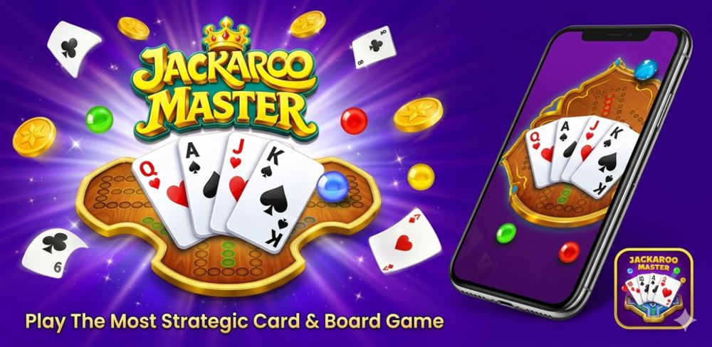
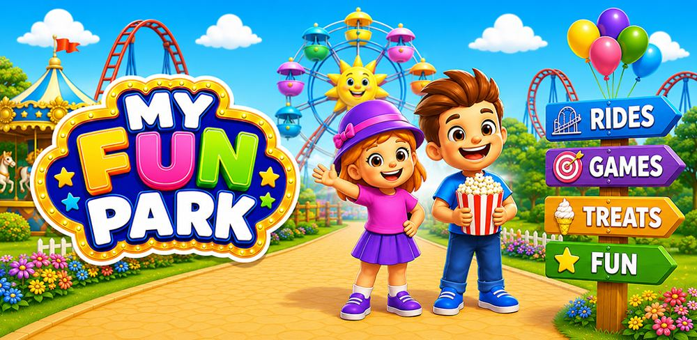
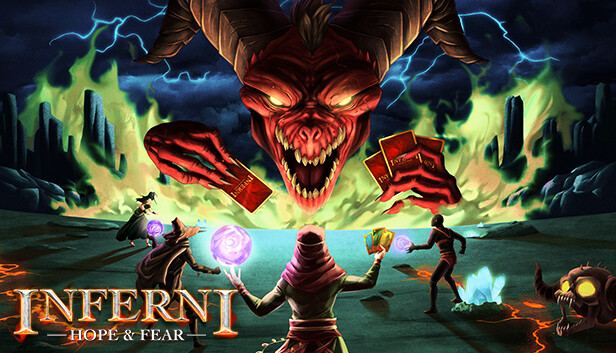

MULTIPLAYER / MOBILE↗Jackaroo Master
01Rebuilt in Unity. Connected in real time. Ported the Cocos/TypeScript game with gameplay parity and a custom WebSocket network manager.
UnityC#WebSockets
From the first line of C# to the final frame.
I turn complex systems into games that feel great.
Live games, real-time multiplayer, and the systems that make them work.

MULTIPLAYER / MOBILE↗Rebuilt in Unity. Connected in real time. Ported the Cocos/TypeScript game with gameplay parity and a custom WebSocket network manager.

TYCOON / MOBILE + WEBGL↗Built for more players, across more platforms. Added two rides, reusable skins, and progression integrations. Ported the game to CrazyGames, GameDistribution, Playgama, and Yandex Games, and built a custom localization system from scratch—without Unity Localization—to meet project requirements.
Delivered Android releases with ads and attribution, alongside gameplay and stability improvements.
From objectives to meaningful progression. Implemented NPC-driven tasks with quest dependencies, objective tracking, quest switching, and reward collection.
Reworked first-time user experience (FTUE) with directional guidance, combat and upgrade tutorials, and progression unlocks. Updated rocket quests, UI feedback, respawn behavior, and ascension tasks; delivered the Poki WebGL build.

MULTIPLAYER / STEAM↗A smoother game, frame by frame. Optimized rendering, textures, and code; resolved multiplayer synchronization issues and migrated to URP.
Live-game updates, SDK maintenance, and Android / iOS releases.
Unity · Mobile↗JSON-driven missions, cloud saves, inventory, and wallet authentication.
PlayFab · TonConnectFour-language localization, runtime assets, editor tools, and mini-games.
AWS S3 · URPTouch-based physics, ball merging, obstacles, and finish-line progression.
Unity · C#↗I’m Suleman, a Unity game developer based in Lahore. I build, port, and improve games across mobile, PC, and WebGL.
I enjoy the work behind the experience: making multiplayer stay in sync, turning a prototype into maintainable systems, and finding the bottleneck between a good game and a smooth one.
AWAY FROM THE EDITORTable tennis, cricket, anime, teaching, coding challenges—and, of course, video games.
Multiplayer architecture, NPC-driven quests, FTUE, custom localization, SDK integrations, and mobile / WebGL releases.
Performance optimization, backend-connected features, mini-games, and Unity Netcode.
Three hyper-casual prototypes, competitive AI, and a custom third-person controller.
Bachelor of Software Engineering
PUCIT / FCIT · Lahore, Pakistan
From gameplay logic to the last mile of a production release.
Unity, C#, C++, gameplay systems, NPC quests, FTUE, UI, custom localization, mini-games
WebSockets, Unity Netcode, PlayFab, AWS S3, JSON-based data systems
Firebase, Google AdMob, AppLovin MAX, Adjust, GameAnalytics
Git, GitHub, GitLab, Jira, Asana, Android, iOS, Steam, WebGL, CrazyGames, Poki, GameDistribution, Playgama, Yandex Games